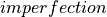
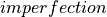
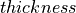
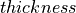

Old / new best fit radii¶
The implementation of the new best fit algorithms allowed
an improvement of the database by storing the mid-surface imperfections in a
“
 ” format instead of a “
” format instead of a “
 ” format and the
thickness imperfections in a “ ” format instead of a
“ ” file. This showed to be more convenient to
interchange imperfections between cones and cylinders and requires less stored
information.
” format and the
thickness imperfections in a “ ” format instead of a
“ ” file. This showed to be more convenient to
interchange imperfections between cones and cylinders and requires less stored
information.
The previous files with “ ” had been compared with the new
generated files and the respective best fit radius, which for
cones should be taken as the radius at the bottom. Below the old
radius is compared with the new radius, showing that the files that
were in the database had already been treated by a best fit algorithm.
For Mid-Surface Imperfection (MSI)¶
Name |
old (mm) |
new (mm) |
|---|---|---|
degenhardt_2010_z15 |
250.78039 |
250.77990 |
degenhardt_2010_z17 |
250.77277 |
250.77294 |
degenhardt_2010_z18 |
250.77991 |
250.77989 |
degenhardt_2010_z20 |
250.72453 |
250.72452 |
degenhardt_2010_z21 |
250.71667 |
250.71765 |
degenhardt_2010_z22 |
250.78368 |
250.78307 |
degenhardt_2010_z23 |
250.70771 |
250.70775 |
degenhardt_2010_z24 |
250.71796 |
250.71792 |
degenhardt_2010_z25 |
250.70585 |
250.70509 |
degenhardt_2010_z26 |
250.74842 |
250.74841 |
zimmermann_1992_z33 |
250.00000 |
250.00015 |
awcyl111 |
203.34475 |
203.34541 |
awcyl9201 |
203.20508 |
202.06214 |
awcyl9202 |
201.95339 |
202.04195 |
awcyl9203 |
202.14465 |
202.18147 |
For Thickness Imperfection (TI)¶
Name |
old (mm) |
new (mm) |
|---|---|---|
degenhardt_2010_z15 |
250.27002 |
250.26986 |
degenhardt_2010_z17 |
250.35001 |
250.34982 |
degenhardt_2010_z18 |
250.30003 |
250.29986 |
degenhardt_2010_z20 |
250.30000 |
250.29983 |
degenhardt_2010_z21 |
250.23999 |
250.23985 |
degenhardt_2010_z22 |
250.29997 |
250.29979 |
degenhardt_2010_z23 |
250.23001 |
250.22987 |
degenhardt_2010_z24 |
250.21999 |
250.21986 |
degenhardt_2010_z25 |
250.23999 |
250.23985 |
degenhardt_2010_z26 |
250.27000 |
250.26985 |
awcyl111 |
203.34464 |
250.34530 |
awcyl9201 |
202.05996 |
202.06213 |
awcyl9202 |
201.95397 |
202.04193 |
awcyl9203 |
202.14463 |
202.18145 |